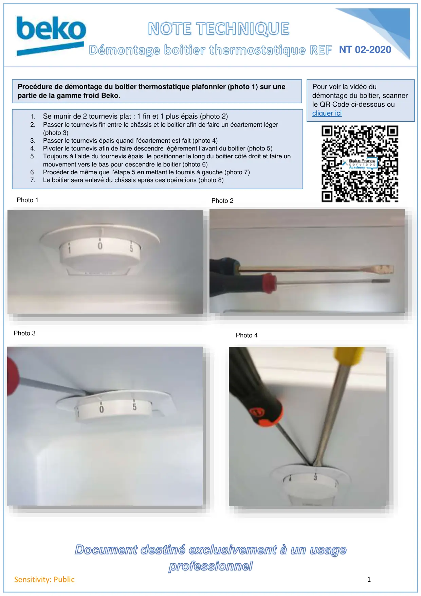
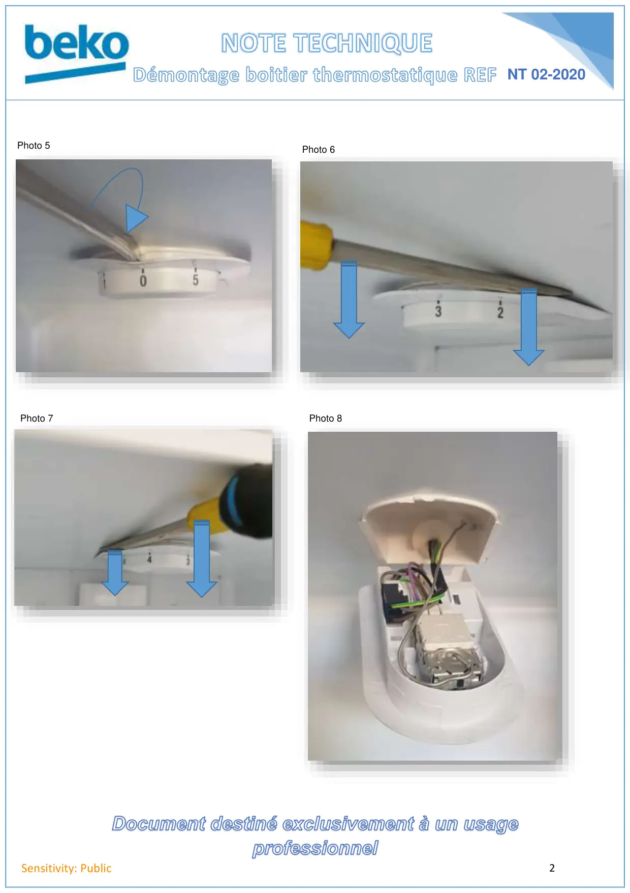

Démontage boitier thermostat plafonnier REF

Document destiné exclusivement à un usage1Sensitivity: PublicNT 02-2020Procédure de démontage du boitier thermostatique plafonnier (photo 1) sur unepartie de la gamme froid Beko.Photo 11. Se munir de 2 tournevis plat : 1 fin et 1 plus épais (photo 2)2.Passer le tournevis fin entre le châssis et le boitier afin de faire un écartement léger(photo 3)3.Passer le tournevis épais quand l’écartement est fait (photo 4)4.Pivoter le tournevis afin de faire descendre légèrement l’avant du boitier (photo 5)5.Toujours à l’aide du tournevis épais, le positionner le long du boitier côté droit et faire unmouvement vers le bas pour descendre le boitier (photo 6)6.Procéder de même que l’étape 5 en mettant le tournis à gauche (photo 7)7.Le boitier sera enlevé du châssis après ces opérations (photo 8)Photo 2Photo 3Photo 4Pour voir la vidéo dudémontage du boitier, scannerle QR Code ci-dessous oucliquer ici
1 / 2
Document destiné exclusivement à un usage2Sensitivity: PublicNT 02-2020Photo 5Photo 6Photo 7Photo 8
2 / 2